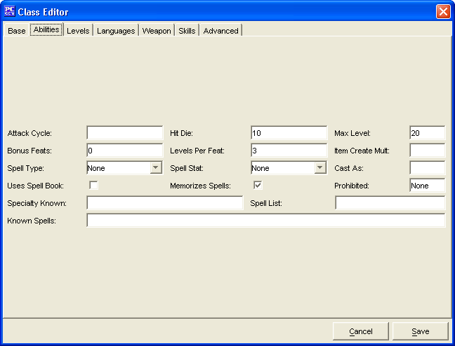

The Abilities Tab is used to add additional abilities for the Class being created.
The Attack Cycle is the rate of which the class gains extra attacks.
The Hit Die is the Hit Die used to determine hit points at each level gained
The Max Level is the maximum level a character in this class can advance to.
The Bonus Feats is used to determine how many extra feats the class will get at first level only.
The Levels Per Feat is the number of levels it takes for a monster to gain a new feat
The Item Create Mult is the numeric value supplied that will be multiplied with the class level of the character for calculating potions, scrolls, and wands. (The default value is 1.)
The Spell Type is the type of spells the character casts.
The Spell Stat is used to tell PCGen what attribute/stat to use for determining bonus spells and maximum level the character can cast
The Cast As field tells PCGen to use the referenced class's progressions. E.g. Cleric
The Uses Spell Book flag indicates that the class is required to use a spellbook as a wizard does.
The Memorizes Spells flag indicates that the class is required to memorize spells as a wizard does.
The Prohibited field is a comma delimited list of spell schools that are prohibited to the class (no spells from that school can be taken)
The Specialty Known field tells PCGen to add the numeric value given to the number of specialty school spells know by the spell caster, if not listed, the default value is 0
The Spell List field gives the class the ability to cast the spells listed in this field.
The Known Spells field is used to automatically give spells, by name or level, to the spell caster. All spells granted by name or level will be given as long as the spell caster has a high enough prerequisite attribute score. The main entries are pipe delimited, and if an entry contains a comma delimited list, all the entries in the comma delimited list must be met. LEVEL=3,TYPE=Custom would be met only for level 3 spells which had Custom in its TYPE: string.
The Cancel and Save buttons, which appear on every tab, are used to either cancel the Class creation or save it to the customClasses.lst file.